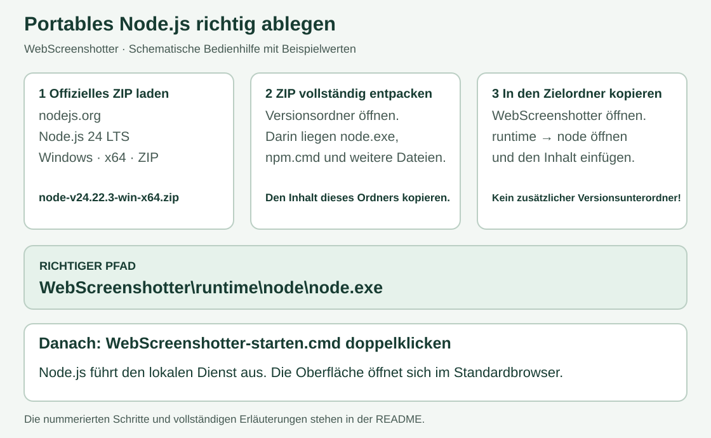
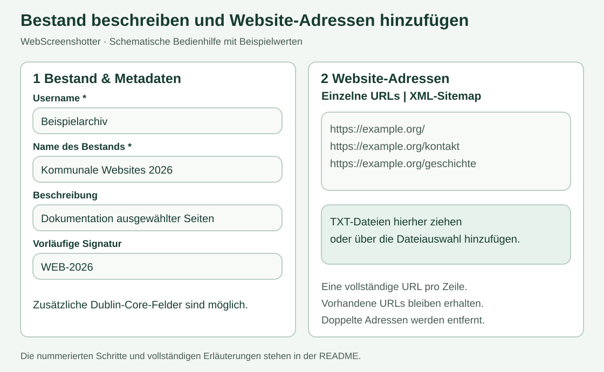
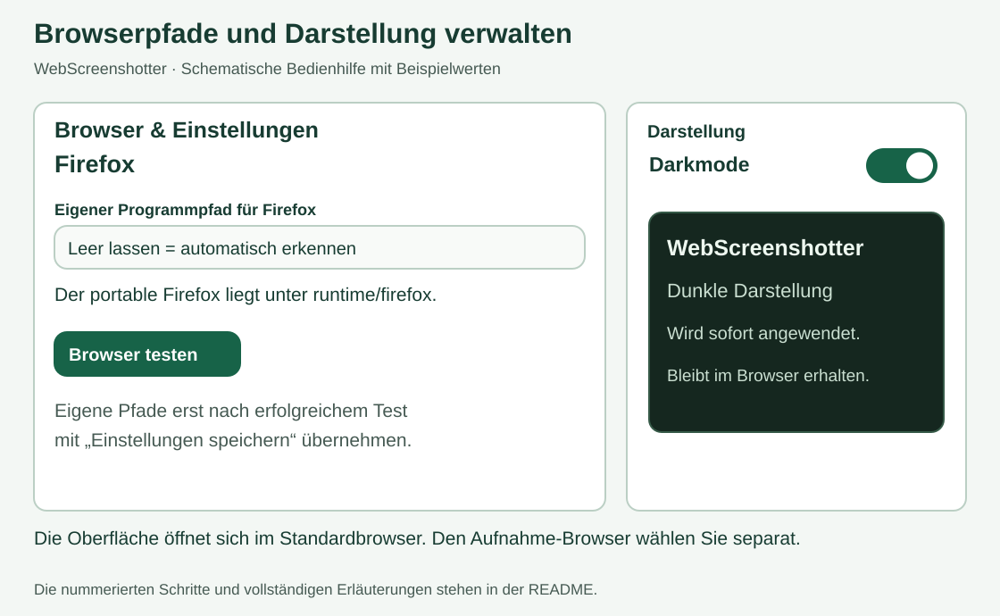
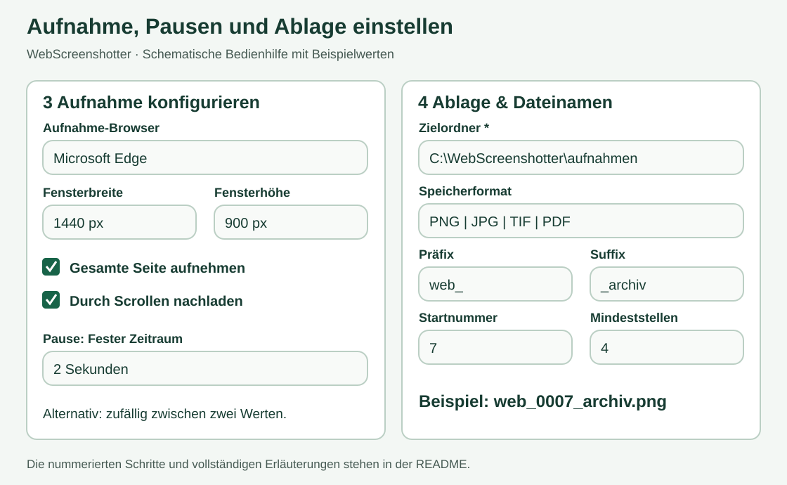
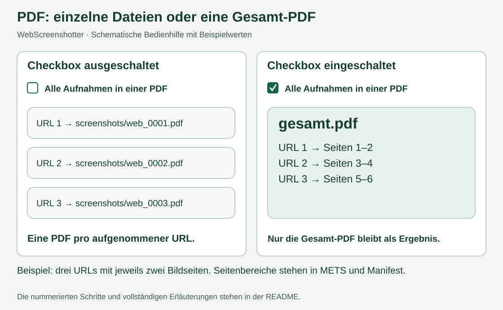
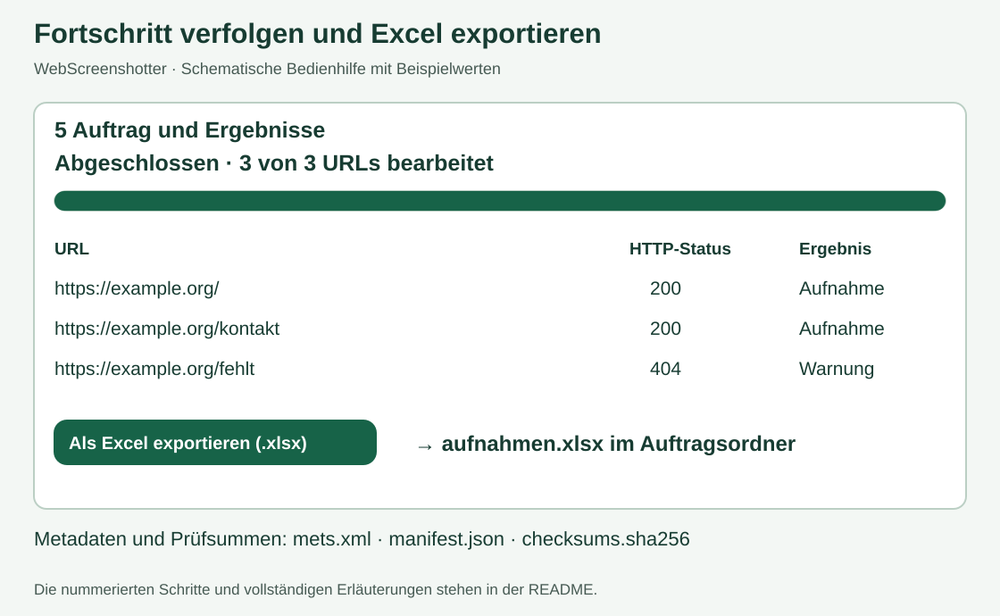

WebScreenshotter
Tool zum automatisierten Anfertigen von Screenshots mit Metadaten.
WebScreenshotter nimmt Websites automatisch auf und speichert die Bilder mit nachvollziehbaren Metadaten. Die Oberfläche läuft lokal im Windows-Standardbrowser. Ein JavaScript-Dienst unter Node.js steuert den Aufnahme-Browser im Hintergrund und schreibt die Dateien auf den PC.
Version 1.3.0 · Dokumentationsstand: 26. November 2026
Node.js ab Version 22 ist erforderlich. Im vollständigen Windows-Paket ist Node.js bereits enthalten. Beim Bezug des Quellcodes aus Git müssen die Laufzeit und die Projektabhängigkeiten ergänzt werden. Python ist für die heutige Anwendung nicht erforderlich.
Die Abbildungen sind schematische Bedienhilfen mit Beispielwerten, keine Screenshots eines tatsächlich ausgeführten Aufnahmeauftrags. Alle wesentlichen Informationen stehen zusätzlich im Text.
Inhalt
- Entstehung des Tools
- Funktionsumfang
- Voraussetzungen
- Schnellstart
- Portables Node.js einrichten
- Start aus dem Git-Quellcode
- Erster Auftrag Schritt für Schritt
- URLs und TXT-Dateien
- XML-Sitemaps
- Browser und Einstellungen
- Aufnahmeoptionen und Zeitabstände
- Ablage und Dateinamen
- PDF-Ausgabe
- Fortschritt und Abbruch
- Excel-Export
- Metadaten und Dateiformat
- Darstellung und Zugänglichkeit
- Aufbewahren und Übertragen
- Fehlerbehebung
- Technische Grenzen
- Entwicklung und Git
- Quellen und weiterführende Dokumentation
Entstehung des Tools
Die ursprüngliche Grundlage war ein Python-Skript zum Anfertigen von Website-Screenshots. Dieses Skript war für den vorgesehenen Einsatz zu technisch: Einrichtung und Bedienung setzten Kenntnisse voraus, die für einen einfachen Aufnahmeauftrag nicht erforderlich sein sollten.
Deshalb wurde die Anwendung noch einmal durch KI-unterstütztes Vibecoding als portable Lösung mit HTML, CSS und JavaScript umgesetzt. Anforderungen und Bedienabläufe wurden in natürlicher Sprache beschrieben, der entstandene Quellcode anschließend angepasst und geprüft.
Die heutige Anwendung benötigt kein Python. Node.js bleibt erforderlich, weil es den lokalen JavaScript-Dienst ausführt. Dieser übernimmt Browsersteuerung, Dateiausgabe und Metadatenverarbeitung. Ein Doppelklick auf public/index.html startet deshalb nicht die vollständige Anwendung.
Funktionsumfang
- Einzelne oder mehrere URLs, TXT-Import per Drag-and-drop oder Dateiauswahl sowie XML-Sitemaps.
- Headless-Aufnahmen mit Chrome/Chromium, Microsoft Edge oder Firefox.
- Einstellbare Fenstergröße, ganze Seiten oder sichtbarer Ausschnitt und automatisches Scrollen.
- Feste oder zufällige Pausen, zusätzliche Ladezeit und Zeitlimit pro Seite.
- Einstellbare Wiederholungsversuche mit eigenen festen oder zufälligen Wartezeiten und vollständiger Dokumentation jedes Versuchs.
- Ausgabe als PNG, JPG, TIF oder PDF.
- Bei PDF entweder einzelne Dateien pro URL oder ausschließlich eine gemeinsame
gesamt.pdf. - Zielordner und Dateinamen mit Präfix, Laufnummer, führenden Nullen und Suffix.
- Bestandsangaben und zusätzliche Dublin-Core-Felder.
- METS 2.0 mit eingebettetem Dublin Core und PREMIS 3.0.
- Dokumentation von URL, Zeitpunkt, Titel, HTTP-Status, Browser, User-Agent und SHA-256.
- Fortschrittsanzeige, Protokoll, Abbruch und Excel-Export.
- Darkmode und Unterstützung der Tastaturbedienung.
Aufgenommen wird die gerenderte Ansicht einer Website. Das Tool erstellt keine vollständige Offline-Kopie aller Website-Dateien und kein WARC-Webarchiv.
Voraussetzungen
| Bestandteil | Voraussetzung |
|---|---|
| Betriebssystem für das portable Paket | Windows 10 oder 11, 64-Bit-Intel-/AMD-Prozessor, also x64. |
| Node.js | Mindestens Version 22; enthalten ist Node.js 24.22.3. Diese Anleitung verwendet die weiterhin unterstützte 24-LTS-Reihe. |
| Browser für die Oberfläche | Ein eingerichteter Windows-Standardbrowser. |
| Browser für Aufnahmen | Chrome/Chromium, Edge oder Firefox. Der beigelegte Firefox ist eine optionale Headless-Testumgebung. |
| Speicherort | Vollständig entpackter Programmordner und beschreibbarer Zielordner. |
| Netzwerk | Für die aufzunehmenden Websites; beim Einrichten eines Git-Checkouts zusätzlich für die Paketinstallation. |
| Speicherplatz / Arbeitsspeicher | Abhängig von Anzahl, Länge und Format der Aufnahmen. Lange Seiten und Gesamt-PDFs können viel Speicher benötigen. |
Eine Ausgabe für Windows ARM64 oder 32-Bit-Windows ist nicht enthalten. Für das Entpacken von portablem Node.js in einen beschreibbaren Ordner ist keine systemweite Installation nötig. Unternehmensrichtlinien können das Ausführen portabler Programme einschränken.
Zwei Browser-Aufgaben: Der Standardbrowser zeigt die Oberfläche. Der separat gewählte Aufnahme-Browser erstellt die Screenshots. Diese Auswahl ändert nicht Ihren Windows-Standardbrowser.
Schnellstart
Vollständiges Windows-Paket
WebScreenshotter-Windows-x64.zipherunterladen.- Im Explorer Rechtsklick auf die ZIP-Datei, dann Alle extrahieren.
- Einen beschreibbaren Speicherort wählen und den entpackten Ordner öffnen. Nicht aus der ZIP-Vorschau starten.
- Prüfen:
WebScreenshotter-starten.cmd,server.js,node_modulesundruntimeliegen zusammen im Hauptordner. - WebScreenshotter-starten.cmd doppelklicken.
- Das CMD-Fenster geöffnet lassen. Die Oberfläche öffnet sich automatisch im Standardbrowser.
- Falls kein Browserfenster erscheint, die im CMD-Fenster angezeigte Adresse manuell öffnen. Normalerweise:
http://127.0.0.1:4317. - Nach der Nutzung im CMD-Fenster Strg+C drücken und eine gegebenenfalls angezeigte Rückfrage bestätigen.
Es gibt genau einen Starter: WebScreenshotter-starten.cmd. Die frühere Datei Screenshotter-starten.cmd wurde entfernt. Alte Verknüpfungen müssen auf den neuen Namen zeigen.
Der Starter verwendet zuerst runtime/node/node.exe. Fehlt diese Datei, sucht er nach einer installierten Node.js-Version über den Windows-Suchpfad. Er installiert oder lädt selbst keine Programme nach.
Bei einer Fehlermeldung
- Node.js fehlt: Portables Node.js einrichten befolgen.
- JavaScript-Pakete fehlen: Vollständiges Paket erneut entpacken oder Start aus dem Git-Quellcode beachten.
- Browser nicht verfügbar: Browser & Einstellungen öffnen und den Programmpfad prüfen.
Portables Node.js einrichten
Dieser Abschnitt hilft, wenn runtime/node/node.exe fehlt, der Starter Node.js nicht findet oder Sie den Quellcode aus Git verwenden.
Node.js ist die Laufzeitumgebung für JavaScript außerhalb des Browsers. „Portabel“ bedeutet: Die Windows-ZIP-Ausgabe wird in den WebScreenshotter-Ordner entpackt. Ein Installationsassistent und eine dauerhafte Änderung der Windows-Umgebungsvariablen sind dafür nicht nötig.

1. Den offiziellen Download öffnen
Öffnen Sie die offizielle Node.js-Downloadseite. Für diese Anleitung eignet sich Node.js 24 LTS, wie im fertigen WebScreenshotter-Paket.
Direkt zu den offiziellen Dateien dieser Reihe:
Node.js 24: ZIP-Dateien und Prüfsummen
Wählen Sie dort die Datei mit der Endung -win-x64.zip. Zum Dokumentationsstand heißt sie node-v24.22.3-win-x64.zip. Die Versionsnummer kann sich später ändern.
| Datei / Auswahl | Bedeutung |
|---|---|
node-v24.…-win-x64.zip | Richtige portable Ausgabe für diese Windows-x64-Anleitung. |
.msi | Systemweiter Installationsassistent; für die portable Ablage nicht erforderlich. |
win-arm64 | Andere Prozessorarchitektur; nicht die x64-Ausgabe. |
.tar.gz, .tar.xz, .pkg | Andere Paketarten bzw. Betriebssysteme. |
Node.js ausschließlich von der offiziellen Website beziehen. Im selben Downloadverzeichnis enthält SHASUMS256.txt die veröffentlichten SHA-256-Prüfsummen.
2. Die Node.js-ZIP entpacken
- Die heruntergeladene Datei
node-v24.…-win-x64.zipim Explorer suchen. - Rechtsklick, dann Alle extrahieren.
- Den entpackten Ordner öffnen.
- Gegebenenfalls den darin liegenden Versionsordner
node-v24.…-win-x64öffnen. - Dort müssen unter anderem
node.exe,npm.cmd,LICENSEundnode_modulessichtbar sein.
node.exe nicht per Doppelklick starten. Diese Datei wird später vom WebScreenshotter-Starter aufgerufen.
3. Den richtigen Zielordner anlegen
- Den WebScreenshotter-Hauptordner öffnen: den Ordner mit
WebScreenshotter-starten.cmdundserver.js. - Darin einen Ordner namens
runtimeanlegen, falls er fehlt. runtimeöffnen.- Darin den Ordner
nodeanlegen, falls er fehlt, und öffnen.
Der vom Starter erwartete Ordner heißt runtime ohne abschließendes „s“. runtimes/ wird ebenfalls von Git ignoriert, ist aber kein alternativer Suchpfad des Starters.
4. Den entpackten Inhalt kopieren
- Zum entpackten Node.js-Ordner zurückgehen, in dem
node.exeliegt. - Mit Strg+A den gesamten Inhalt auswählen.
- Mit Strg+C kopieren.
- In den WebScreenshotter-Unterordner
runtime/nodewechseln. - Mit Strg+V einfügen.
Kopieren Sie den Inhalt des Versionsordners. Zwischen node und node.exe darf keine zusätzliche Ordnerebene liegen.
| Pfad relativ zum WebScreenshotter-Hauptordner | Bewertung |
|---|---|
runtime/node/node.exe | Richtig. Diesen Pfad verwendet der Starter. |
runtime/node/node-v24.22.3-win-x64/node.exe | Ein Versionsordner zu viel. Dessen Inhalt nach oben kopieren. |
runtimes/node/node.exe | Falscher Ordnername für den Starter. runtime verwenden. |
node.exe direkt neben dem Starter | Nach runtime/node verschieben. |
Die Node.js-eigenen Dateien unter runtime/node/node_modules gehören zu Node.js bzw. npm. Sie ersetzen nicht die Projektabhängigkeiten in node_modules direkt neben server.js.
5. Prüfen und starten
Doppelklicken Sie erneut auf WebScreenshotter-starten.cmd.
Für eine genaue Versionsprüfung im Explorer den WebScreenshotter-Hauptordner öffnen, in die Adressleiste powershell eingeben und Enter drücken. Dann:
.\runtime\node\node.exe --versionEine Ausgabe wie v24.22.3 bestätigt, dass die portable Datei ausführbar ist. Die Hauptversionsnummer muss mindestens 22 sein. Anschließend:
.\WebScreenshotter-starten.cmdIm vollständigen Windows-Paket sind die Projektpakete schon enthalten. Erscheint bei einem Git-Checkout jetzt „JavaScript-Pakete fehlen“, mit dem nächsten Abschnitt fortfahren.
Node.js aktualisieren
WebScreenshotter zuerst mit Strg+C beenden. Eine passende, unterstützte Node.js-Version herunterladen, entpacken und die Inhalte von runtime/node ersetzen.
Für die normale Nutzung prüft der Starter die Mindestversion. Wer ein neues verteilbares Windows-Paket baut, muss auch runtime/versions.json mit den passenden Versions- und Prüfsummenangaben pflegen; siehe Entwicklung und Git.
Start aus dem Git-Quellcode
Ein Git-Checkout enthält den Quellcode. Wegen der .gitignore fehlen insbesondere runtime/, runtimes/ und die Projektabhängigkeiten in node_modules/.
- Repository klonen oder Quellcode herunterladen und entpacken.
- Portables Node.js wie oben einrichten, einschließlich
npm.cmdund der übrigen ZIP-Inhalte. - Im Explorer den Hauptordner mit
package.jsonöffnen. - In die Adressleiste
powershelleingeben und Enter drücken. - Folgende Befehle nacheinander ausführen:
$env:PATH = "$PWD\runtime\node;$env:PATH"
.\runtime\node\npm.cmd ci
.\WebScreenshotter-starten.cmdDie erste Zeile ergänzt Node.js nur für dieses PowerShell-Fenster im Suchpfad. npm ci installiert die in package-lock.json festgelegten JavaScript-Pakete. Dafür wird Internet benötigt. npm.cmd vermeidet die Verwechslung mit einem möglicherweise durch PowerShell-Richtlinien blockierten npm.ps1.
Ist Node.js bereits systemweit installiert, können Sie stattdessen node --version prüfen und im Projektordner npm.cmd ci ausführen.
Ein Aufnahme-Browser muss ebenfalls verfügbar sein. Chrome und Edge werden an üblichen Installationsorten gesucht. Der portable Firefox ist eine optionale Beigabe des vollständigen Windows-Pakets; er wird nicht automatisch aus Git heruntergeladen.
Erster Auftrag Schritt für Schritt

- Neue Aufnahme auswählen.
- Username eintragen, etwa
Beispielarchiv. Das ist eine Bearbeiterangabe für die Metadaten, kein Login. - Name des Bestands eintragen, etwa
Website-Test. - Optional Beschreibung und Vorläufige Signatur ergänzen.
- Unter Einzelne URLs eine vollständige Adresse eingeben, etwa
https://example.org/. - Einen verfügbaren Aufnahme-Browser wählen.
- Für den ersten Test 1440 Pixel Breite, 900 Pixel Höhe und die übrigen Standardwerte belassen.
- Einen beschreibbaren Zielordner wählen; der vorausgefüllte Ordner kann verwendet werden.
- PNG, Präfix
web_, Startnummer 1 und vier Stellen wählen. - Aufnahme starten anklicken.
- Den Fortschritt unten verfolgen und nach Abschluss die Bilder und
mets.xmlim Auftragsordner prüfen.
Felder mit Sternchen sind Pflichtfelder. Username, Bestandsname, gültige Adressen, ein verfügbarer Aufnahme-Browser und ein gültiger Zielordner sind erforderlich.
Zusätzliche Metadaten
Über die Schaltfläche zum Hinzufügen weiterer Metadatenfelder lassen sich Dublin-Core-Elemente auswählen und Werte eintragen. Elemente dürfen mehrfach vorkommen. Leere Zusatzfelder werden nicht exportiert.
| Element | Bedeutung / Beispiel |
|---|---|
title | Zusätzlicher Titel oder alternative Bezeichnung. |
creator | Urheber oder weitere verantwortliche Person. |
subject | Thema, Schlagwort oder Klassifikation. |
description | Ergänzende Inhaltsbeschreibung. |
publisher | Herausgebende Stelle. |
contributor | Weitere beteiligte Personen oder Stellen. |
date | Fachlich relevante Datumsangabe des Bestands. |
type | Art des Inhalts. |
format | Ergänzende Formatangabe. |
identifier | Weitere Kennung oder Signatur. |
source | Herkunft oder Quelle. |
language | Sprache, etwa de. |
relation | Zugehöriger Bestand oder verknüpfte Ressource. |
coverage | Räumlicher oder zeitlicher Bezug. |
rights | Rechte- oder Nutzungsangabe. |
Diese Zusatzfelder beschreiben den Bestand. Technische Angaben zur einzelnen Aufnahme werden automatisch ergänzt. Höchstens 100 zusätzliche Metadatenfelder sind möglich.
URLs und TXT-Dateien
Adressen direkt eingeben
Eine vollständige HTTP- oder HTTPS-Adresse pro Zeile:
https://example.org/
https://example.org/kontakt
https://example.org/geschichteLeere Zeilen sind erlaubt. Gleiche, nach der Normalisierung übereinstimmende Adressen werden zusammengefasst; die Reihenfolge des ersten Auftretens bleibt erhalten. Andere Protokolle wie file: sind nicht vorgesehen.
TXT-Dateien importieren
- Eine Textdatei mit einer URL pro Zeile anlegen und als
.txtspeichern, vorzugsweise UTF-8. - Die Datei auf den URL-Bereich ziehen und loslassen.
- Alternativ die Dateiauswahl unter TXT-Dateien hierher ziehen oder auswählen verwenden.
- Die Importmeldung prüfen.
Beispiel:
# Erster Testbestand
https://example.org/
https://example.org/kontakt
# Weitere Seiten
https://example.org/geschichteBeim TXT-Import sind mit # beginnende Kommentarzeilen erlaubt. Vorhandene URLs bleiben vor den neuen Adressen stehen; Duplikate werden übersprungen.
Mehrere TXT-Dateien dürfen zusammen höchstens 2 MiB groß sein. Ein Auftrag darf höchstens 10.000 eindeutige URLs enthalten. Unterstützt werden UTF-8 sowie UTF-16 mit BOM und Windows-/Unix-Zeilenenden.
Bei einer ungültigen Zeile wird der gesamte Import zurückgewiesen. Die bisherige Eingabe bleibt erhalten. Die Meldung benennt die betreffende Datei bzw. Zeile.
XML-Sitemaps
- XML-Sitemap auswählen.
- Die vollständige Sitemap-Adresse eintragen, etwa
https://example.org/sitemap.xml. - Sitemap prüfen anklicken und das Ergebnis abwarten.
- Den Auftrag wie gewohnt starten.
Unterstützt werden Sitemaps, Sitemap-Indizes, verschachtelte Sitemaps, XML-Namensräume und .xml.gz. Bildverweise aus Sitemap-Erweiterungen werden nicht als Seiten-URLs behandelt.
Die Sitemap wird beim Start erneut eingelesen und kann sich seit der Vorschau geändert haben. Grenzen: 100 Sitemap-Dateien, acht Verschachtelungsebenen, jeweils 10 MiB und 10.000 eindeutige Seiten-URLs.
Browser und Einstellungen

Erkennung und eigene Programmpfade
Unter Browser & Einstellungen zeigt die Anwendung erkannte Browser an. Übliche Installationsorte und unter Windows zusätzlich die App-Paths-Registrierung werden geprüft.
Ein eigenes Pfadfeld kann leer bleiben; dann gilt die Erkennung. Bei Bedarf den vollständigen Pfad zur ausführbaren Datei eintragen, beispielsweise:
C:\Program Files\Google\Chrome\Application\chrome.exe
C:\Program Files (x86)\Microsoft\Edge\Application\msedge.exe
C:\Program Files\Mozilla Firefox\firefox.exeDie tatsächlichen Installationsorte können abweichen. Ein eigener Pfad überschreibt die Erkennung. Ein ungültiger Pfad wird gemeldet; es erfolgt kein stillschweigender Browserwechsel.
Browser testen prüft mit den aktuellen Eingaben Browserstart, Testseite und Testaufnahme. Anschließend Einstellungen speichern verwenden. Ein erfolgreicher Test zeigt Browserversion, Testbildgröße und User-Agent.
Unterstützte Browser
| Browser | Einsatz |
|---|---|
| Chrome / Chromium | Headless-Aufnahmen über Playwright/CDP mit dem installierten Programm. |
| Microsoft Edge | Headless-Aufnahmen über Playwright/CDP mit dem installierten Programm. |
| Firefox aus dem Paket | Optionaler, zur Playwright-Version passender Build unter runtime/firefox. Die Oberfläche nennt ihn Firefox. Für Tests ausdrücklich auswählen. |
| Eigener Firefox | Ansteuerung über WebDriver BiDi; Kompatibilität mit Browser testen prüfen. |
| Safari | Pfad kann erkannt oder hinterlegt werden. Wegen fehlenden unterstützten Headless-Betriebs nicht als Aufnahme-Browser auswählbar. |
Der portable Firefox startet nicht die Bedienoberfläche und wird bei neuen Eingaben nicht automatisch vorausgewählt. Eine ausdrücklich gewählte oder gespeicherte Browserauswahl bleibt erhalten.
Aufnahmen verwenden isolierte Profile. Persönliche Cookies, Anmeldungen und Erweiterungen des normalen Browsers werden nicht übernommen. Login-Seiten und Cookie-Banner können daher im Bild erscheinen.
Aufnahmeoptionen und Zeitabstände

| Einstellung | Wirkung / Standard |
|---|---|
| Fensterbreite | Standard 1440 CSS-Pixel, erlaubt 320–7680. Beeinflusst das responsive Website-Layout. |
| Fensterhöhe | Standard 900 CSS-Pixel, erlaubt 240–4320. |
| Gesamte Seite aufnehmen | Aktiv: auch Inhalte unterhalb des sichtbaren Bereichs. Inaktiv: eingestellter Ausschnitt. |
| Inhalte durch automatisches Scrollen nachladen | Versucht, beim Scrollen nachgeladene Inhalte vor der Aufnahme sichtbar zu machen. |
| Fester Zeitraum | Gleiche Pause nach jeder Aufnahme; Standard 2 Sekunden. |
| Zufälliger Zeitraum | Neue Pause zwischen Minimum und Maximum; Standard 2–5 Sekunden. |
| Warten nach Seitenaufbau | Zusätzliche Zeit vor der Aufnahme; Standard 2 Sekunden, erlaubt 0–120. |
| Zeitlimit je Seitenaufruf | Standard 45 Sekunden, erlaubt 5–300. |
Die Pause zwischen Aufnahmen beginnt nach Abschluss der vorherigen Aufnahme. Sie ist von der zusätzlichen Wartezeit nach dem Laden einer Seite getrennt. Feste und zufällige Pausen dürfen 0–86.400 Sekunden betragen.
Fehlgeschlagene Aufnahmen wiederholen
Unter Aufnahme konfigurieren → Weitere Aufnahmeoptionen stehen die Wiederholungsversuche (Retries).
- Die Zahl der zusätzlichen Versuche einstellen: 0 deaktiviert Wiederholungen und ist die Voreinstellung. 2 erlaubt den ersten Versuch und höchstens zwei Wiederholungen, insgesamt also drei Versuche pro URL.
- Bei einer Anzahl größer als 0 unter Wartezeit zwischen Wiederholungen entweder Fester Zeitraum oder Zufälliger Zeitraum wählen.
- Eine feste Wartezeit in Sekunden oder die Werte Mindestens und Höchstens eingeben. Für jede Wiederholung wird ein neuer Zufallswert innerhalb dieser Grenzen gewählt.
- Den Auftrag starten. Der Status zeigt den aktuellen Versuch und bei einer Wiederholung den Countdown an.
Erlaubt sind 0–20 zusätzliche Versuche und Wartezeiten von 0–86.400 Sekunden. Die feste Retry-Wartezeit beträgt zunächst 5 Sekunden; für die zufällige Wartezeit sind 2–10 Sekunden voreingestellt. Diese Zeiten sind unabhängig von der Pause zwischen unterschiedlichen URLs.
Wiederholt werden fehlgeschlagene Aufnahmen, Netzwerkfehler und Antworten des aufgerufenen Hauptdokuments mit HTTP-Status 4xx/5xx. Ein erfolgreicher Versuch beendet die Wiederholungen sofort. Hinweise wie das Erreichen des Scroll-Limits lösen allein keine Wiederholung aus. Benutzerabbruch und ein abgestürzter Aufnahme-Browser beenden den Ablauf; ein abgestürzter Browser wird nicht automatisch neu gestartet.
Zwischengeschaltete HTTP-Fehlerseiten erzeugen keine zusätzlichen Bilddateien. Ist auch der letzte Versuch eine HTTP-Fehlerseite, wird sie nach Möglichkeit als Aufnahme mit Warnung erhalten. Bei 0 Retries bleibt damit das bisherige Verhalten erhalten. Reine Aufnahme- oder Netzwerkfehler ohne gespeichertes Bild bleiben als fehlgeschlagenes Ergebnis dokumentiert.
Jeder Versuch wird protokolliert, auch wenn eine spätere Wiederholung erfolgreich ist: mit URL, Versuchsnummer, Zeitpunkten, Ergebnis, Fehlertext und letztem verfügbarem HTTP-Status. Gibt es keine Serverantwort, lautet der Status im Manifest und JSON-Protokoll ausdrücklich null; die Oberfläche meldet den fehlenden Status. Es wird kein HTTP-Code erfunden. Beispielsweise kann ein Screenshotfehler nach einer erfolgreichen Serverantwort trotzdem HTTP 200 besitzen.
protokoll.jsonl enthält je Versuch einen Datensatz vom Typ capture-attempt, das Manifest bewahrt die Historie in records[].attempts, und METS enthält pro Versuch ein eigenes PREMIS-Ereignis. Fehlversuche werden bereits vor der Retry-Wartezeit gesichert. Dateinamen, Laufnummern, Gesamt-PDF und Excel behalten einen Ergebniseintrag pro URL; Excel zeigt den abschließenden Versuch bzw. die erhaltene Datei.
Ablage und Dateinamen
Der Zielordner ist der übergeordnete Speicherort. Jeder Auftrag erhält einen neuen Unterordner mit Bestandsname, Zeitstempel und eindeutiger Kennung. Vorhandene Aufnahmen werden nicht überschrieben.
Über die Ordnerschaltfläche einen vorhandenen Ordner auswählen oder einen absoluten Pfad eingeben, etwa C:\WebScreenshotter\aufnahmen. Dieser Pfad muss auf dem PC gelten, auf dem der Dienst läuft.
Dateiname = Präfix + Laufnummer mit Mindeststellenzahl + Suffix + Endung
| Einstellung | Beispiel |
|---|---|
| Präfix | web_ |
| Startnummer | 7 |
| Mindeststellenzahl | 4 |
| Suffix | _archiv |
| Format | PNG |
| Ergebnis | web_0007_archiv.png, web_0008_archiv.png, … |
Führende Nullen füllen die Mindeststellenzahl auf. Größere Zahlen werden nicht abgeschnitten. Die Nummerierung folgt den URL-Versuchen; nach einem Fehler kann eine Nummer ohne Bilddatei auftreten.
Startnummer: 0–999.999.999. Mindeststellen: 1–12. Präfix und Suffix dürfen keine Pfadtrenner oder ungültigen Windows-Dateinamenzeichen enthalten.
Ausgabeformate
| Format | Eigenschaften |
|---|---|
| PNG | Verlustfrei. |
| JPG | Komprimiertes Bild; Qualität 1–100, Standard 92. |
| TIF | Unkomprimiertes RGBA-TIFF, häufig größere Dateien. |
| Bildbasierte Ausgabe; lange Screenshots können mehrere Seiten belegen. |
PDF-Ausgabe

Bei Speicherformat → PDF erscheint Alle Aufnahmen in einer PDF.
| Checkbox | Ergebnis |
|---|---|
| Ausgeschaltet | Eine PDF pro URL unter screenshots/ mit dem gewählten Benennungsschema. |
| Eingeschaltet | Ausschließlich gesamt.pdf im Auftragsordner, in URL-Reihenfolge. |
Eine lange Website kann mehrere PDF-Seiten belegen. Ergebnistabelle, Manifest und METS dokumentieren die Seitenbereiche der Gesamt-PDF ab Seite 1.
Während der Aufnahme liegen PDF-Teile in pdf-zwischenstand/. Erst nach Speicherung der Gesamt-PDF und ihrer Metadaten werden diese entfernt. Bei einem Abbruch werden fertige Teile nach Möglichkeit noch zusammengeführt; ein erneuter Abbruch während dieses Schritts beendet auch die Zusammenführung.
Scheitert die Zusammenführung, bleiben die Teile zur Rettung erhalten. Eine unvollständige Gesamt-PDF wird nicht als fertiges Ergebnis veröffentlicht. Ohne erfolgreiche Aufnahme entsteht keine leere Gesamt-PDF.
Die PDFs enthalten Bilder, keinen durchsuchbaren Website-Text. Sie sind weder PDF/A noch getaggte PDF/UA-Dokumente. Die Zusammenführung ist auf 256 MiB Quell-PDFs und 5.000 Seiten begrenzt.
Fortschritt und Abbruch

Unten erscheinen Status, aktuelle URL, Fortschritt, Wartepausen, Meldungen und Ergebnislinks.
- HTTP 200 bedeutet normalerweise eine erfolgreiche Auslieferung.
- Bei HTTP 4xx/5xx wird die dargestellte Antwortseite nach Möglichkeit aufgenommen und als Warnung dokumentiert.
- Ein Netzwerk- oder Aufnahmefehler wird dokumentiert; aktivierte Wiederholungen werden vor dem Wechsel zur nächsten URL durchgeführt.
- Ein erkannter Browserabsturz beendet den Auftrag und speichert den vorhandenen Zwischenstand.
Auftrag abbrechen stoppt den Auftrag. Bereits gespeicherte Bilder bleiben erhalten. Den Dienst während des abschließenden Schreibens der Metadaten bzw. der PDF-Zusammenführung weiterlaufen lassen.
Es läuft ein Auftrag zur Zeit. Nach dessen Ende kann ein neuer gestartet werden.
Ein Neustart setzt einen unterbrochenen Auftrag nicht automatisch fort. Das Manifest enthält den erreichten Stand und noch offene URLs. Fertige Dateien bleiben erhalten. Frühere Aufträge werden nach einem Neustart nicht automatisch in die Oberfläche geladen.
Excel-Export
Nach Abschluss, Abbruch oder einem bereits dokumentierten fehlgeschlagenen Auftrag Als Excel exportieren (.xlsx) anklicken. aufnahmen.xlsx wird im Auftragsordner gespeichert und zum Download angeboten. Dafür ist keine Excel-Installation nötig.
| Spalte | Inhalt |
|---|---|
| ID | Laufnummer entsprechend der Startnummer. |
| Dateiname (ohne Endung) | Name der erhaltenen Aufnahme ohne Dateiendung. |
| Titel der URL | Beim Abruf erfasster Seitentitel. |
| Abgerufene Adresse | Endgültige HTTP(S)-Adresse nach Weiterleitungen; ersatzweise Antwortadresse oder ursprünglich angefragte URL. |
| Datum / Uhrzeit | Aufnahmezeitpunkt, ersatzweise Antwortzeitpunkt oder Beginn des Versuchs; lokale Zeitzone des PCs beim Export. |
| Statuscode | HTTP-Status, soweit vorhanden. |
| Sha256 des Screenshots | SHA-256 der erhaltenen Ausgabedatei. |
| Dateipfad | Vollständiger lokaler Pfad der erhaltenen Ausgabedatei. |
Die Datei hat genau diese acht Spalten, eine fixierte Kopfzeile und Filter. IDs, Statuscodes und Zeitpunkte sind sortierbare Zahlen-/Datumswerte. Titel und URLs werden als Text gespeichert. Fehlende Dateiangaben bleiben leer.
Im Gesamt-PDF-Modus bleibt eine Zeile pro URL. Dateiname, Hash und Pfad zeigen auf gesamt.pdf; Seitenbereiche stehen in Ergebnistabelle, METS und Manifest.
Excel verwendet alle dokumentierten Versuche, auch wenn die Oberfläche nur die letzten 500 Ergebnisse zeigt. Exportieren Sie während der laufenden Dienstsitzung. Nach einem Neustart können frühere Aufträge nicht erneut über die Oberfläche exportiert werden.
Metadaten und Dateiformat
Dateien eines Auftrags
| Datei / Ordner | Inhalt |
|---|---|
screenshots/ | Einzelaufnahmen im gewählten Format. |
gesamt.pdf | Im Gesamt-PDF-Modus die einzige endgültige PDF. |
pdf-zwischenstand/ | Temporäre PDF-Teile, im Fehlerfall zur Rettung erhalten. |
mets.xml | METS 2.0 mit Dublin Core, PREMIS und Dateiverknüpfungen. |
manifest.json | Konfiguration, Browserdaten, Ergebnisse, Sitemap-Herkunft und offene URLs. |
checksums.sha256 | SHA-256-Prüfsummen der erhaltenen Ausgabedateien. |
protokoll.jsonl | Aktivitätsprotokoll; ein JSON-Datensatz pro Zeile. |
aufnahmen.xlsx | Optional erzeugte Excel-Übersicht. |
Dublin Core
Der Bestand enthält unter anderem seinen Namen als dc:title, Username als dc:creator, Beschreibung als dc:description und vorläufige Signatur als dc:identifier. Zusätzliche Dublin-Core-Felder kommen hinzu.
Für einzelne Aufnahmen werden unter anderem Seitentitel, Quell-URL, Zeitpunkt, Medientyp und Bestandsbezug abgeleitet.
PREMIS 3.0
PREMIS dokumentiert Versuche und Dateien: angefragte und endgültige URL, UTC-Zeitpunkte, Titel, HTTP-Status, ausgewählte Antwortheader, Aufnahmeparameter, Browserversion, User-Agent, Größe, SHA-256 und Fehlerangaben.
Bei Wiederholungen bleiben alle Versuche als getrennte Ereignisse mit eigener Kennung und Versuchsnummer erhalten. Die Datei und ihr METS-Struktureintrag verweisen auch auf die früheren Fehlversuche. Nur tatsächlich gespeicherte Bilder erhalten ein Dateiobjekt.
Ein fehlgeschlagener Versuch erhält ein Ereignis, aber keine erfundene Bilddatei. Bei der Gesamt-PDF wird die Ableitung aus Einzelteilen dokumentiert. Historische PREMIS-Angaben zu diesen Teilen bedeuten nicht, dass sie nach erfolgreicher Zusammenführung noch vorhanden sind.
METS 2.0
Der Namensraum lautet http://www.loc.gov/METS/v2. Die Datei referenziert das offizielle METS-2-Schema und enthält eingebettetes Dublin Core und PREMIS, Dateiverknüpfungen und Aufnahmereihenfolge. Bei Gesamt-PDFs kommen Seitenbereiche hinzu.
METS-Dateiverweise sind relativ zum Auftragsordner. Bewahren Sie deshalb den gesamten Auftragsordner zusammen auf.
Zeit und Prüfsummen
METS/PREMIS und Manifest verwenden UTC-Zeitstempel. Excel zeigt sie mit der lokalen Zeitzone des exportierenden PCs. Die zugrunde liegende Aufnahmezeit bleibt gleich.
SHA-256 kann Dateiveränderungen erkennbar machen; es ist keine digitale Signatur und kein qualifizierter Zeitstempel. Beispiel zur Prüfung einer Datei:
Get-FileHash -Algorithm SHA256 -LiteralPath "C:\Pfad\zum\Auftrag\screenshots\web_0001.png"Den Pfad ersetzen und das Ergebnis mit checksums.sha256 vergleichen. Im Gesamt-PDF-Modus entsprechend gesamt.pdf prüfen.
Darstellung und Zugänglichkeit
Unter Browser & Einstellungen → Darstellung → Darkmode kann die dunkle Darstellung umgeschaltet werden. Die Auswahl gilt sofort und bleibt in diesem Browser gespeichert.
Die Oberfläche bietet sichtbaren Tastaturfokus, beschriftete Felder und Dialoge, einen Sprunglink, Statusmeldungen für Screenreader und eine an schmale Fenster angepasste Darstellung. Reduzierte Bewegung und Windows-Kontrastdesigns werden berücksichtigt.
| Taste | Bedienung |
|---|---|
| Tab / Umschalt+Tab | Nächstes / vorheriges Bedienelement. |
| Enter | Fokussierte Aktion ausführen. |
| Leertaste | Checkbox oder Schalter bedienen. |
| Pfeiltasten | Auswahlgruppen / Auswahllisten bedienen. |
| Escape | Dialog schließen. |
Der Prüfstand ist keine vollständige WCAG-Zertifizierung. Umfassende Screenreader-Praxistests stehen noch aus. Bildbasierte PDFs werden durch eine zugängliche Bedienoberfläche nicht automatisch zu barrierefreien PDFs.
Aufbewahren und Übertragen
Einstellungen
Browserpfade stehen standardmäßig in data/settings.json. Formularentwürfe und Darkmode liegen im lokalen Speicher des Oberflächen-Browsers. Beim Browser- oder Portwechsel können diese Browserdaten fehlen.
Der Einstellungsordner ist über WEBSCREENSHOTTER_DATA_DIR änderbar; auch der bisherige Name SCREENSHOTTER_DATA_DIR wird unterstützt.
Anwendung auf einen anderen PC kopieren
- WebScreenshotter beenden.
- Den gesamten entpackten Programmordner auf den anderen Windows-x64-PC kopieren.
- Eigene absolute Browserpfade und Zielordner prüfen.
WebScreenshotter-starten.cmddoppelklicken.
Node.js und der beigelegte Firefox werden relativ zum Projektordner gefunden. Auch ein beschreibbares USB-Laufwerk ist möglich.
Aufnahmen übertragen
Den vollständigen Auftragsordner mit Bildern, METS, Manifest und Prüfsummen kopieren. Relative METS-Verweise bleiben dadurch nutzbar. Absolute Pfade in einer bereits erzeugten Excel-Datei beschreiben weiterhin den ursprünglichen Speicherort.
Die Metadaten enthalten Bearbeiter- und Bestandsangaben, URLs und technische Aufnahmedaten. Diese Angaben gehören zum übergebenen Bestand.
Fehlerbehebung
| Meldung / Beobachtung | Vorgehen |
|---|---|
| Node.js nicht gefunden | runtime/node/node.exe prüfen; Portables Node.js einrichten befolgen. Der Starter verweist ebenfalls auf die README. |
| Node.js zu alt oder nicht startbar | .\runtime\node\node.exe --version prüfen. Passendes Windows-x64-ZIP ab Version 22 verwenden; lokale Ausführungsrichtlinien beachten. |
| JavaScript-Pakete fehlen | Vollständiges Paket erneut entpacken oder im Quellcode-Ordner npm.cmd ci ausführen. |
| Browserfenster öffnet sich nicht | Angezeigte lokale Adresse manuell im Standardbrowser öffnen. |
| Port bereits belegt | Laufende Instanz verwenden oder beenden; alternativ anderen Port setzen. |
| „Aufnahme starten“ deaktiviert | Verbindung, Pflichtfelder und verfügbaren ausgewählten Aufnahme-Browser prüfen. |
| Kein Aufnahme-Browser | Browser & Einstellungen, Programmpfad und Browser testen prüfen. |
| Firefox nicht vorausgewählt | Den beigelegten Testbrowser ausdrücklich als Aufnahme-Browser auswählen. |
| Browser-Test hängt / Browser stürzt ab | Dienst in einem normalen lokalen Terminal starten; Browserinstallation und lokale Richtlinien prüfen. Unterprozesse müssen erlaubt sein. |
| TXT-Import fehlgeschlagen | Gemeldete Zeile, HTTP(S)-Adresse und Kodierung prüfen. Bisherige Eingabe bleibt erhalten. |
| Website-Inhalte fehlen | Wartezeit erhöhen und Scrollen prüfen. Login, Cookie-Banner und unendliches Nachladen werden nicht automatisch aufgelöst. |
| Gesamt-PDF fehlt | Protokoll und Manifest lesen; erhaltene PDF-Teile sichern und Größen-/Seitenlimits beachten. |
| Excel nach Neustart nicht verfügbar | Export vor Ende der Dienstsitzung erzeugen. Bereits gespeicherte Dateien liegen weiter im Auftragsordner. |
| Neue Beschriftungen nicht sichtbar | Dienst neu starten und Browserseite neu laden. |
| Alte Verknüpfung funktioniert nicht | Auf WebScreenshotter-starten.cmd umstellen. |
Anderen Port verwenden
Im Projektordner PowerShell öffnen:
$env:PORT = "4318"
.\WebScreenshotter-starten.cmdDie angezeigte Adresse verwenden, beispielsweise http://127.0.0.1:4318.
Ohne automatisches Browserfenster
.\WebScreenshotter-starten.cmd --no-openOder direkt:
.\runtime\node\node.exe server.jsDer Dienst bindet nur an die lokale Loopback-Adresse. Er ist nicht als öffentlich erreichbarer Webserver vorgesehen.
Technische Grenzen
| Bereich | Grenze / Eigenschaft |
|---|---|
| URLs | 10.000 eindeutige URLs pro Auftrag. |
| TXT-Import | Zusammen 2 MiB pro Import. |
| Zusatzmetadaten | 100 Felder. |
| Wiederholungsversuche | 0–20 zusätzliche Versuche pro URL; 0 = ausgeschaltet. |
| Sitemaps | 100 Dateien, acht Ebenen, jeweils 10 MiB. |
| Einzelbilder | 80 Megapixel und 60.000 Pixel Höhe. |
| Automatisches Scrollen | Höchstens 50 Schritte bzw. etwa 15 Sekunden. |
| Gesamt-PDF | 256 MiB Quell-PDFs und 5.000 Seiten. |
| Ergebnisvorschau | Letzte 500 Datensätze; Excel verwendet den gesamten Auftrag. |
| Excel-Zellen | 32.767 Zeichen. Längere Texte werden nur in Excel gekürzt, Originaldaten bleiben im Manifest. |
| Neustart | Keine automatische Wiederaufnahme oder Anzeige früherer Aufträge. |
| Website-Interaktion | Keine automatische Anmeldung oder allgemeine Cookie-Banner-Bedienung. |
Ergebnisse können je nach Website, Browser und lokalen Rechten variieren. In der eingeschränkten Entwicklungsumgebung konnten erfolgreiche echte Aufnahmen zuletzt nicht für alle Browser bestätigt werden. Prüfungen und Grenzen stehen im PRUEFBERICHT.md.
Entwicklung und Git
Projektstruktur
| Pfad | Aufgabe |
|---|---|
server.js | Lokaler Dienst, API, Sitzungsschutz und Downloads. |
public/ | HTML, CSS und Browser-JavaScript. |
src/ | Browsersteuerung, Aufträge, Bildformate, Metadaten und Excel. |
test/ | Funktionstests, Integrationstests und offizielle Prüfschemas. |
scripts/check.js | JavaScript-Syntaxprüfung. |
scripts/build-docs.js | SVG-Bedienhilfen und ANLEITUNG.html aus der README erzeugen. |
scripts/build-portable.js | Windows-Paket aus geprüften lokalen Laufzeiten und Abhängigkeiten bauen. |
docs/images/ | Schematische Abbildungen der Anleitung. |
runtime/node/ | Portable Node.js-Laufzeit. |
runtime/firefox/ | Optionaler Firefox für Headless-Tests. |
node_modules/ | Projektabhängigkeiten. |
data/ | Lokale Einstellungen. |
dist/ | Windows-Paket und ZIP. |
Die Anwendung bleibt JavaScript, HTML und CSS ohne Frontend-Build-Schritt. Datenverträge und Zuständigkeiten erläutert WARTUNG.md.
Prüfungen
.\runtime\node\node.exe scripts/check.js
.\runtime\node\node.exe --test test/*.test.js
.\runtime\node\node.exe --test test/integration/*.test.jsIntegrationstests starten echte Browser und benötigen eine geeignete Umgebung. Unter Windows werden METS 2.0 und PREMIS 3.0 zusätzlich über Windows PowerShell mit einem .NET-XSD-Validator geprüft. Dies ist eine Entwicklungsprüfung; die Anwendung selbst ist ein Node.js-Dienst.
Dokumentation neu erstellen
Nach einer README-Änderung:
.\runtime\node\node.exe scripts/build-docs.jsDas erzeugt die sechs SVG-Abbildungen ohne zusätzliche Grafikbibliothek und die HTML-Anleitung mit relativen Bildpfaden.
Windows-Paket neu erstellen
.\runtime\node\node.exe scripts/build-portable.jsBenötigt werden geprüfte Laufzeiten, Lizenzen, runtime/versions.json und die gesperrten Projektabhängigkeiten. Node.js- und Firefox-Dateien werden anhand der hinterlegten SHA-256-Werte geprüft. Das Skript lädt nichts nach.
Ein frischer Git-Checkout genügt für den Paketbau noch nicht: Die ausgeschlossenen Laufzeiten müssen ergänzt werden. Firefox und Playwright müssen zusammenpassen. Quellen und Lizenzen: THIRD_PARTY.md.
Git und Weitergabe
Die .gitignore schließt runtime/ und runtimes/ einschließlich des portablen Firefox aus. Ebenfalls ausgeschlossen: node_modules/, data/, aufnahmen/, .test-output/, dist/ und Logdateien.
Quellcode, README, HTML-Anleitung, Abbildungen und Paketdefinitionen werden versioniert. Das vollständige portable ZIP wird separat als Download bereitgestellt.
Ignore-Regeln betreffen noch nicht versionierte Dateien. Falls Laufzeiten schon eingecheckt wurden, müssen sie zusätzlich aus dem Git-Index entfernt werden.
Für ein neues, leeres Online-Repository im Projektordner; Name, E-Mail und URL ersetzen:
git init -b main
git config user.name "Dein Name"
git config user.email "deine-mail@example.de"
git add .
git status
git commit -m "WebScreenshotter mit Dokumentation"
git remote add origin "DEINE-CLONE-URL"
git push -u origin mainVor dem Commit die Dateiliste prüfen. Ein befülltes Online-Repository muss mit seinem vorhandenen Verlauf eingebunden werden.
Quellen und weiterführende Dokumentation
- Offizielle Node.js-Downloads
- Node.js 24: ZIP-Dateien und Prüfsummen
- Node.js: Unterstützungsstatus
- METS 2.0 – Library of Congress
- METS-2-Schema
- METS 2 Guide
- PREMIS 3.0
- Dublin Core Metadata Element Set 1.1
- Git: Repository anlegen
- Git: Ignore-Regeln
- Git: Änderungen übertragen
- Prüfbericht
- Wartungsanleitung
- Lizenzen und Quellen der Drittanbieter-Komponenten
Die Lizenzhinweise der mitgelieferten Laufzeiten und Pakete gehören zum Paket und sollten bei einer Weitergabe erhalten bleiben.